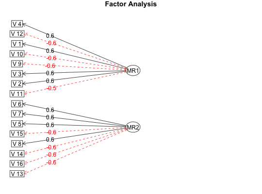

Factor analysis or principal components analysis results are typically interpreted in terms of the major loadings on each factor. These structures may be represented as a table of loadings or graphically, where all loadings with an absolute value > some cut point are represented as an edge (path). fa.diagram uses the various diagram functions to draw the diagram. fa.graph generates dot code for external plotting. fa.rgraph uses the Rgraphviz package (if available) to draw the graph. het.diagram will draw "heterarchy" diagrams of factor/scale solutions at different levels.
fa.diagram(fa.results,Phi=NULL,fe.results=NULL,sort=TRUE,labels=NULL,cut=.3, simple=TRUE, errors=FALSE,g=FALSE,digits=1,e.size=.05,rsize=.15,side=2, main,cex=NULL,marg=c(.5,.5,1,.5),adj=1, ...) het.diagram(r,levels,cut=.3,digits=2,both=TRUE, main="Heterarchy diagram",l.cex,gap.size,...) fa.graph(fa.results,out.file=NULL,labels=NULL,cut=.3,simple=TRUE, size=c(8,6), node.font=c("Helvetica", 14), edge.font=c("Helvetica", 10), rank.direction=c("RL","TB","LR","BT"), digits=1,main="Factor Analysis", ...) fa.rgraph(fa.results,out.file=NULL,labels=NULL,cut=.3,simple=TRUE, size=c(8,6), node.font=c("Helvetica", 14), edge.font=c("Helvetica", 10), rank.direction=c("RL","TB","LR","BT"), digits=1,main="Factor Analysis",graphviz=TRUE, ...)
| fa.results | The output of factor analysis, principal components analysis, or ICLUST analysis. May also be a factor loading matrix from anywhere. |
|---|---|
| Phi | Normally not specified (it is is found in the FA, pc, or ICLUST, solution), this may be given if the input is a loadings matrix. |
| fe.results | the results of a factor extension analysis (if any) |
| out.file | If it exists, a dot representation of the graph will be stored here (fa.graph) |
| labels | Variable labels |
| cut | Loadings with abs(loading) > cut will be shown |
| simple | Only the biggest loading per item is shown |
| g | Does the factor matrix reflect a g (first) factor. If so, then draw this to the left of the variables, with the remaining factors to the right of the variables. It is useful to turn off the simple parameter in this case. |
| r | A correlation matrix for the het.diagram function |
| levels | A list of the elements in each level |
| both | Should arrows have double heads (in het.diagram) |
| size | graph size |
| sort | sort the factor loadings before showing the diagram |
| errors | include error estimates (as arrows) |
| e.size | size of ellipses |
| rsize | size of rectangles |
| side | on which side should error arrows go? |
| cex | modify font size |
| l.cex | modify the font size in arrows, defaults to cex |
| gap.size | The gap in the arrow for the label. Can be adjusted to compensate for variations in cex or l.cex |
| marg | sets the margins to be wider than normal, returns them to the normal size upon exit |
| adj | how many different positions (1-3) should be used for the numeric labels. Useful if they overlap each other. |
| node.font | what font should be used for nodes in fa.graph |
| edge.font | what font should be used for edges in fa.graph |
| rank.direction | parameter passed to Rgraphviz-- which way to draw the graph |
| digits | Number of digits to show as an edgelable |
| main | Graphic title, defaults to "factor analyis" or "factor analysis and extension" |
| graphviz | Should we try to use Rgraphviz for output? |
| … | other parameters |
Path diagram representations have become standard in confirmatory factor analysis, but are not yet common in exploratory factor analysis. Representing factor structures graphically helps some people understand the structure.
fa.diagram does not use Rgraphviz and is the preferred function. fa.graph generates dot code to be used by an external graphics program. It does not have all the bells and whistles of fa.diagram, but these may be done in the external editor.
Hierarchical (bifactor) models may be drawn by specifying the g parameter as TRUE. This allows for an graphical displays of various factor transformations with a bifactor structure (e.g., bifactor and biquartimin. See omega for an alternative way to find these structures.
The het.diagram function will show the case of a hetarchical structure at multiple levels. It can also be used to show the patterns of correlations between sets of scales (e.g., EPI, NEO, BFI). The example is for showing the relationship between 3 sets of 4 variables from the Thurstone data set. The parameters l.cex and gap.size are used to adjust the font size of the labels and the gap in the lines.
In fa.rgraph although a nice graph is drawn for the orthogonal factor case, the oblique factor drawing is acceptable, but is better if cleaned up outside of R or done using fa.diagram.
The normal input is taken from the output of either fa or ICLUST. This latter case displays the ICLUST results in terms of the cluster loadings, not in terms of the cluster structure. Actually an interesting option.
It is also possible to just give a factor loading matrix as input. In this case, supplying a Phi matrix of factor correlations is also possible.
It is possible, using fa.graph, to export dot code for an omega solution. fa.graph should be applied to the schmid$sl object with labels specified as the rownames of schmid$sl. The results will need editing to make fully compatible with dot language plotting.
To specify the model for a structural equation confirmatory analysis of the results, use structure.diagram instead.
fa.diagram: A path diagram is drawn without using Rgraphviz. This is probably the more useful function.
fa.rgraph: A graph is drawn using rgraphviz. If an output file is specified, the graph instructions are also saved in the dot language.
fa.graph: the graph instructions are saved in the dot language.
fa.rgraph requires Rgraphviz. Because there are occasional difficulties installing Rgraphviz from Bioconductor in that some libraries are misplaced and need to be relinked, it is probably better to use fa.diagram or fa.graph.
omega.graph, ICLUST.graph, structure.diagram to convert the factor diagram to sem modeling code.
test.simple <- fa(item.sim(16),2,rotate="oblimin") #if(require(Rgraphviz)) {fa.graph(test.simple) } fa.diagram(test.simple)f3l <- f3$loadings fa.diagram(f3l,main="input from a matrix")Phi <- f3$Phi fa.diagram(f3l,Phi=Phi,main="Input from a matrix")het.diagram(Thurstone,levels=list(1:4,5:8,3:7))